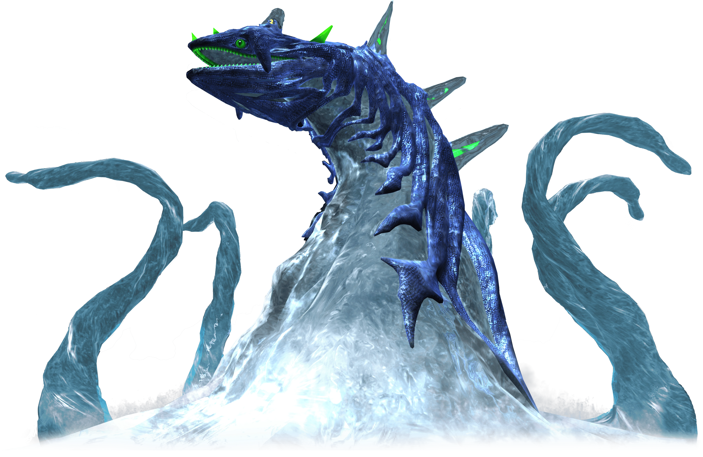

Prologo Parte 3
Os humanos por sua vez avançaram tecnologicamente, e acompanharemos o cientista DR. Gerald Robotnik que tem uma neta chamada Maria Robotnik que tem uma doença que a faz nao poder morar na terra, entao eles moram numa estação espacial, Gerald era obsecado em fazer a forma de vida perfeita, porem o primeiro experimento(biolizard) nao deu certo e o segundo(shadow) nao tinha como o fazet viver, entao ele faz um trato com uma raça alienigena que em 50 anos ele teria que da as esmeraldas dos chaos e eles dariam o suprimento da vida. A estação e invadio pelo governo Maria e morta,Gerald é preso e Shadow é mandado para a terra em uma capsula que o adormece por 50 anos.